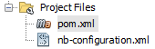
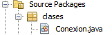
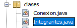
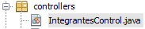

JSF es un marco web Java orientado a componentes del lado del servidor que simplifica el proceso de desarrollo de aplicaciones web empresariales Java enriquecidas. JSF se destaca por brindar un enfoque altamente personalizable pero estandarizado para crear interfaces de usuario de aplicaciones. El nivel de la interfaz de usuario suele ser la parte más desafiante y variable de cualquier aplicación. También es la diferencia entre una aplicación exitosa que es ampliamente adoptada y evolucionada consistentemente versus una que es adoptada a regañadientes y cambiada con frecuencia para cumplir con los deseos del usuario. JSF proporciona una plataforma poderosa para resolver los problemas comunes que aparecen con frecuencia durante el desarrollo de aplicaciones web empresariales de Java, como validación, conversión, navegación, creación de plantillas y flujos de páginas. Al proporcionar una forma estándar para resolver los problemas comunes del desarrollo de aplicaciones web, JSF es un marco excelente que reduce el tiempo de desarrollo y mantenimiento de las aplicaciones web. Esto es especialmente cierto cuando su equipo de desarrollo es grande y está distribuido, un escenario común que se encuentra en la empresa. La creación de experiencias de usuario en torno a un conjunto de componentes JSF estandarizados permite un buen grado de personalización y expresión, pero también establece un "ADN compartido" sobre cómo debe verse, comportarse y responder una aplicación en diferentes implementaciones.[1]
JSF ofrece API y bibliotecas de etiquetas para:
La mayor parte de los navegadores actuales interpretan el leguaje JSF como HTMT 5, por lo que su manejo, se puede
decir de cierta manera que es parecido, solo con cierto cambio e la forma de manejo de las etiquetas.
A continuación veremos como es el manejo de este lenguaje:
Para JSF se introdujo un estandar para la ubicación de recursos, por que se se recomienda almacenar todos
estos recurso de una manera ordenada.
Para esto se recomienda crear una carpeta con el nombre "resources" en la que se almacenaran los recursos
segun su uso, ejemplo si desea agregar imagenes dentro de la carpeta anteriormente mesionada se creara otra
carpeta con el nombre "images".
Para obtener una hojas de estilo (css), dentro de la carpeta de resorces debe existir otra con el nombre
"css" donde se encontraran todos los archivos css a utilizar.
Y para realizar el llamado a dicho archivo ya almacenado, se lo realiza de la siguiente manera.
<h:outputStylesheet library="css" name="mystyles.css"/>
Para obtener los archivos Java Script debe existir dicho archivo n la ruta /resources/scripts/nombre_archivo.js.
Y para realizar el llamado a dicho archivo ya almacenado, se lo realiza de la siguiente manera.
<h:outputScript library="scripts" name="mycript.js"/>
Para obtener los archivos Imagen debe existir dicho archivo n la ruta /resources/images/nombre_image.
Y para realizar el llamado a dicho archivo ya almacenado, se lo realiza de la siguiente manera.
<h:graphicImage library="images" name="logo.png"/>
Podemos realizar conexión hacia una base de datos de manera local o remota, a contición realizaremos una
conexión de manera local hacia nuesto gestos de base de datos, que para esta prueba será postgreSQL, pero
pdemos usar cualquier otro gestor de base de datos.
Además utilizaremos el IDE de Apache Netbeans v12.4
los paso para realizar esto se desglozaran a continuación.
Como primer paso debemos colocar la dependecia de nuetro gentor de base de datos en el archivo pom.xml
se se ecuentra dentro de la carpeta de Project Files que se encuentra en nuestro proyecto.

Si necesitas saber cual es la dependencia de su gestor de base de datsos puede realizar la busqueda en la web.
En nuestro caso al tratarse de PostgreSQL la dependencia en la siguiente:
<dependency>
<groupId>org.postgresql</groupId>
<artifactId>postgresql</artifactId>
<version>42.4.0</version>
</dependency>
Como Segundo paso, procedermos a crear un nuevo documento .java en el que agregaremos todos los datos necesarios
para realizar nuestra conexión a la base de datos.

Dentro de dicho archivo se definiran los elementos necesarios para la conexion de manera exitosa.
import java.sql.Connection;
import java.sql.Statement;
import java.sql.ResultSet;
import java.sql.DriverManager;
public class Conexion {
static String login = "projects";
static String password = "123456";
static String url = "jdbc:postgresql://localhost/postgres";
private Statement statement;
private Connection conexion;
public Conexion() throws Exception {
conexion = null;
statement = null;
Class.forName("org.postgresql.Driver");
conexion = DriverManager.getConnection(url, login, password);
if (conexion != null) {
statement = conexion.createStatement();
System.out.println("Conexión a base de datos " + url + " ... Ok");
}
}
public long insertar(String sentence) throws Exception {
return statement.executeUpdate(sentence);
}
public long delete(String sentence) throws Exception {
return statement.executeUpdate(sentence);
}
public long update(String sentence) throws Exception {
return statement.executeUpdate(sentence);
}
public long select(String sentence) throws Exception {
return statement.executeUpdate(sentence);
}
public Connection getConexion() {
return conexion;
}
public void setConexion(Connection conexion) {
this.conexion = conexion;
}
}
Como tercer paso, procedermos a crear un nuevo documento .java en el que agregaremos todos los datos que queramos
manejar, tanto para insertar, eliminar, leer o actualizar dentro de la base de datos.

public class Integrantes {
private String id;
private String nombres;
private String direccion;
private String telefono;
private String fechaNace;
public String getId() {
return id;
}
public void setId(String id) {
this.id = id;
}
public Integrantes() {
}
public Integrantes(String id, String nombre, String direccion, String phone, String fechaNace) {
this.id=id;
this.nombres=nombre;
this.direccion=direccion;
this.telefono=phone;
this.fechaNace=fechaNace;
}
public String getNombres() {
return nombres;
}
public void setNombres(String nombres) {
this.nombres = nombres;
}
public String getDireccion() {
return direccion;
}
public void setDireccion(String direccion) {
this.direccion = direccion;
}
public String getTelefono() {
return telefono;
}
public void setTelefono(String telefono) {
this.telefono = telefono;
}
public String getFechaNace() {
return fechaNace;
}
public void setFechaNace(String fechaNace) {
this.fechaNace = fechaNace;
}
public long insert() throws Exception {
String sentence = "INSERT INTO public.integrantes("
+ "id, nombres, direccion, telefono, fecha_nace) "
+ "VALUES ('" + id + "', '" + nombres + "', '" + direccion + "', '" + telefono + "', '" + fechaNace + "');";
Conexion conexion = new Conexion();
return conexion.insertar(sentence);
}
public long delete() throws Exception {
String sentence = "DELETE public.integrantes("
+ "WHERE id="+id+";";
Conexion conexion = new Conexion();
return conexion.delete(sentence);
}
public long update() throws Exception {
String sentence = "UPDATE public.integrantes SET nombres="+nombres+",direccion="+direccion+",telefono="+telefono+",fecha_nace="+fechaNace;
Conexion conexion = new Conexion();
return conexion.update(sentence);
}
public long select() throws Exception {
Conexion conexion = new Conexion();
String sentence = "SELECT * FROM integrantes;";
ResultSet rs;
return conexion.select(sentence);
}
}
Como cuarto paso, procedermos a crear un nuevo documento .java, el cual se encargara de recibir los datos
y ejecutar las acciones como select, update, delete e insert dentro de la base de datos.

@Named
@RequestScoped
public class IntegrantesControl {
private String id;
private String nombres;
private String direccion;
private String telefono;
private String fecha_nace;
private String saludo;
public String getId() {
return id;
}
public void setId(String id) {
this.id = id;
}
public String getNombres() {
return nombres;
}
public void setNombres(String nombres) {
this.nombres = nombres;
}
public String getDireccion() {
return direccion;
}
public void setDireccion(String direccion) {
this.direccion = direccion;
}
public String getTelefono() {
return telefono;
}
public void setTelefono(String telefono) {
this.telefono = telefono;
}
public String getFechaNace() {
return fecha_nace;
}
public void setFechaNace(String fechaNace) {
this.fecha_nace = fechaNace;
}
public void saludar(ActionEvent actionEvent) {
saludo = nombres + " " + fecha_nace;
}
public String getSaludo() {
return (saludo = nombres + " " + fecha_nace);
}
public void setSaludo(String saludo) {
this.saludo = saludo;
}
public String save() {
Integrantes integrante = new Integrantes(id, nombres, direccion, telefono,fecha_nace);
try {
if (integrante.insert() == 1) {
return "confirmation";
} else {
return "error";
}
} catch (Exception e) {
return "error";
}
}
public String delete() {
Integrantes integrante = new Integrantes(id, nombres, direccion, telefono,fecha_nace);
try {
if (integrante.delete() == 1) {
return "confirmation";
} else {
return "error";
}
} catch (Exception e) {
return "error";
}
}
public String select() {
Integrantes integrante = new Integrantes(id, nombres, direccion, telefono,fecha_nace);
try {
if (integrante.select() == 1) {
long rs=integrante.select();
return "confirmation";
} else {
return "error";
}
} catch (Exception e) {
return "error";
}
}
public String update() {
Integrantes integrante = new Integrantes(id, nombres, direccion, telefono,fecha_nace);
try {
if (integrante.update() == 1) {
return "confirmation";
} else {
return "error";
}
} catch (Exception e) {
return "error";
}
}
}